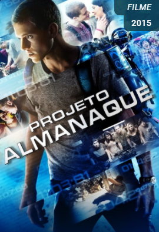

HOME
Séries:
Comédia
Ficção
Terror
Filmes:
Comédia
Ficção
Terror
Cadastro
Página de Filmes (Ficção):
De volta para o Futuro II
Canguru Jack
Assista ao Trailer do De volta para o Futuro II
Desejos Ocultos
Dia do Sim
Assista ao Trailer do Desejos Ocultos
Projeto Almanaque

Projeto Almanaque
Assista ao Trailer Projeto Almanaque
Signal
Signal
Assista ao Trailer do Signal
Quer saber mais sobre a SoulCode?
Clique aqui: Site Oficial Soulcode
Linkedin SoulCode Academy
Facebook SoulCode Academy
Instagram @soulcodeacademy
 Canguru Jack
Canguru Jack